DIPTYQUE : MEMORY
© 2026
02 /
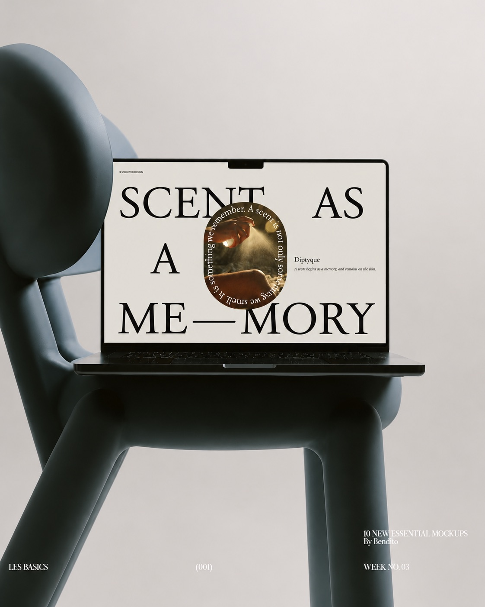
THREE MEMORIES
ABOUT
「SCENT AS A MEMORY」를 중심으로 딥디크의 향을 하나의 기억으로 확장해 표현한 웹 쇼잉입니다. 브랜드와 향수에 대한 소개에서 시작해 세 가지 향을 각각 바다, 무화과, 숲의 이미지와 연결하여 시각화했습니다.
여백과 큰 타이포그래피를 중심으로 구성하고, 향수 이미지와 감각적인 사진을 교차 배치해 향이 특정한 장소와 순간의 기억으로 이어지는 경험을 보여주었습니다.
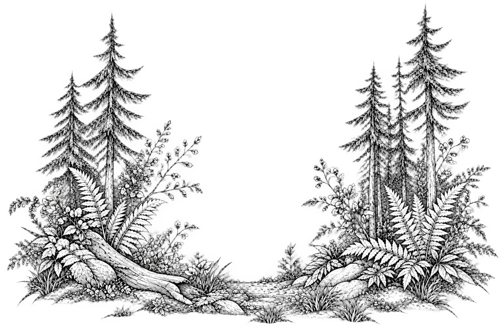
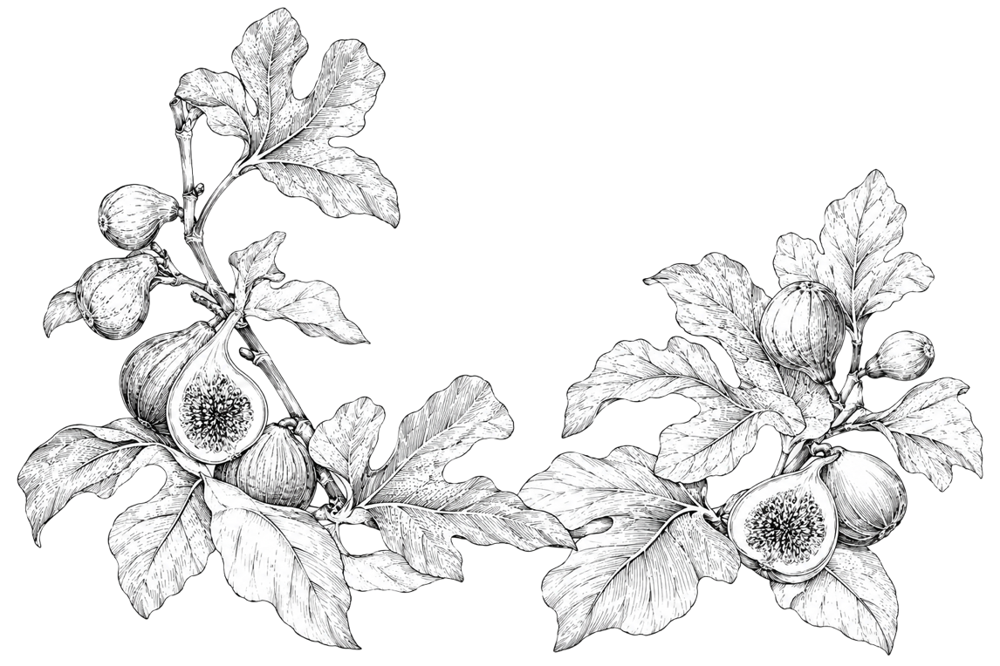
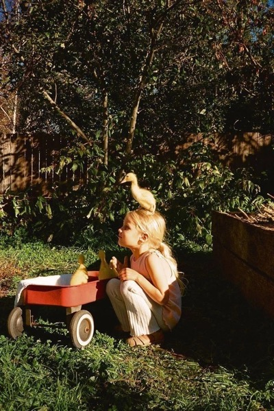
Founded in Paris in 1961, Diptyque began as a creative space created by three artists. Today, the Maison is known for transforming memories, places, and nature into distinctive fragrances and sensory experiences. Rather than simply creating scents, Diptyque tells stories through fragrance — turning moments and memories into something that can be experienced through the senses.
Some memories return through a familiar fragrance, taking us back to places we once knew and feelings we thought we had forgotten.
Some memories return through a familiar fragrance, taking us back to places we once knew and feelings we thought we had forgotten.
The fragrance unfolds gradually, revealing a quiet depth that recalls the stillness of ancient forests and the comforting warmth of natural wood.
Its smooth, enveloping character creates a sense of balance and contemplation, inviting the wearer to slow down and reconnect with the simplicity of nature.
Fig tree
Woody warmth
Sometimes, all it takes is a single breath to return to a place we once called our own.
EDITORIAL DESIGN
Sea
/
Breeze
/
SCENT
Diptyque
AS
A
MORY
ME
—
A scent begins as a memory, and remains on the skin.
© 2026 WEB DESIGN
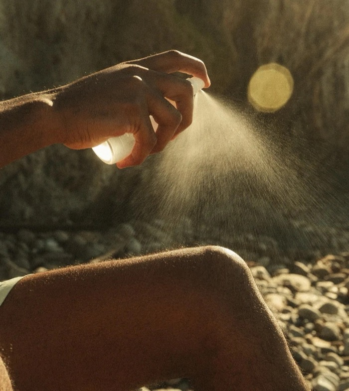
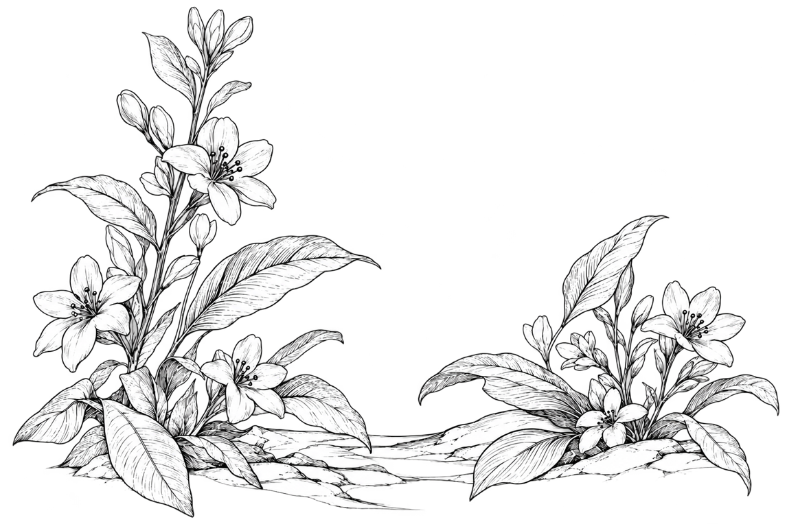
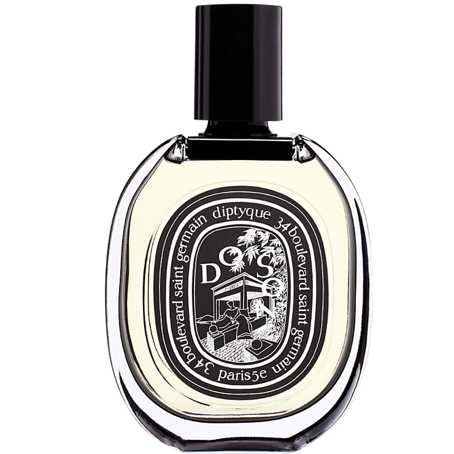
Do Son is a fragrance inspired by the childhood memories of Yves Coueslant, one of the founders of Diptyque. It recalls the summers he spent in Do Son, a seaside resort in northern Vietnam near Ha Long Bay.
The gentle sea breeze, the lush tropical landscape, and the intoxicating scent of tuberose became lasting impressions that would later inspire this distinctive fragrance. At the heart of Do Son lies the scent of tuberose, a flower known for its rich, creamy, and sensual aroma.
Philosykos is a fragrance inspired by the beauty of fig trees in the Greek countryside. It evokes the memory of a summer spent among the fig groves of Mount Pelion, where the warm Mediterranean sun filters through lush green leaves.
Tam Dao is a fragrance inspired by the sacred forests of Indochina, where Yves Coueslant, one of the founders of Diptyque, spent part of his childhood. It evokes the tranquil atmosphere of temples hidden among the mountains, surrounded by towering trees and the earthy scent of the forest.
The fresh scent of fig leaves, the milky sweetness of fig fruit, and the earthy aroma of tree bark come together to capture the essence of nature in its purest form. At the heart of Philosykos lies the distinctive scent of the fig tree, creating a harmonious balance between green freshness, woody warmth, and gentle sweetness.
The warm aroma of sandalwood, the crisp notes of cypress, and the subtle freshness of cedarwood come together to recreate the serenity of nature. At the heart of Tam Dao lies the creamy, woody scent of sandalwood, creating a harmonious balance between warmth, depth, and quiet elegance.
THROUGH THREE DISTINCT
FRAGRANCES, WE REVISIT THE
LANDSCAPES OF SUMMER
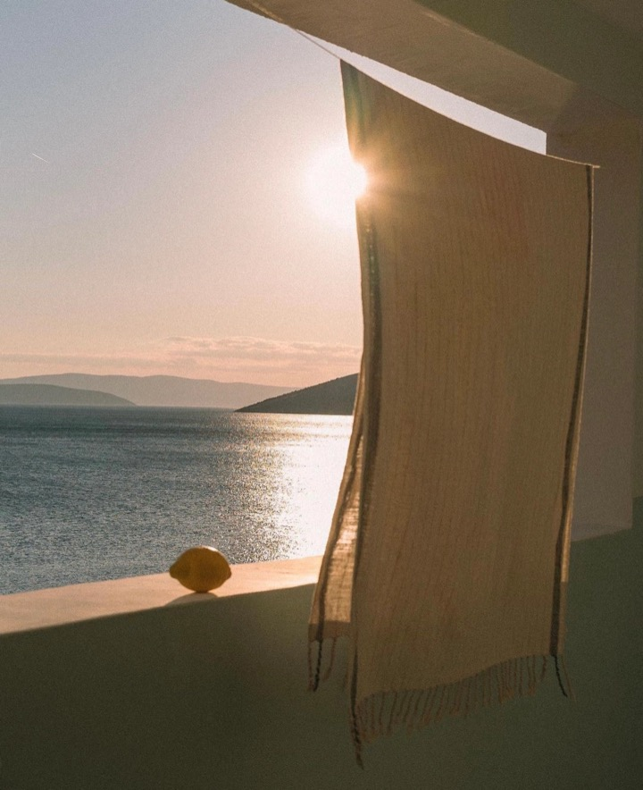
THE SEA REMEMBERS
WHAT WE ONCE FELT
WITHIN FIG LEAVES
Rather than simply capturing the scent of a flower, Do Son recreates a sensory memory—a moment when the fragrance of flowers, the warmth of sunlight, and the freshness of the ocean blend into one unforgettable experience.
Its fragrance evokes the image of white blossoms swaying in the warm coastal air, carried by a soft breeze from the sea.
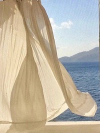
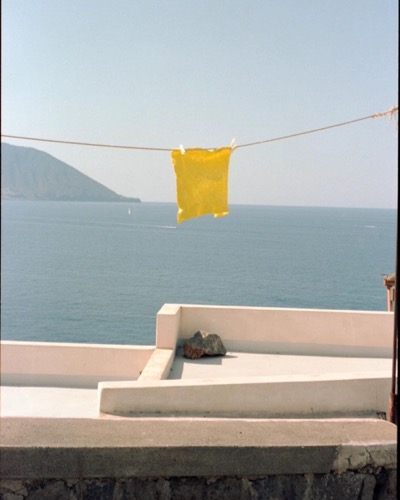
DO SON IS THE SCENT OF
FLOWERS TOUCHED
BY THE SEA BREEZE
PHILOSYKOS IS THE
SCENT OF FIG TREES BATHED
IN SUNLIGHT
TAM DAO IS THE SCENT OF
WOOD BATHED
IN FOREST LIGHT
CEDARWOOD
WHISPERING THROUGH
THE FOREST
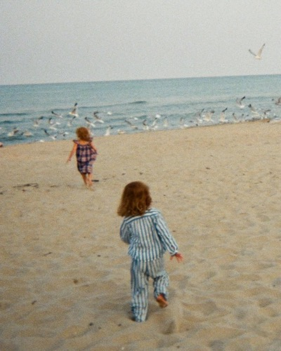
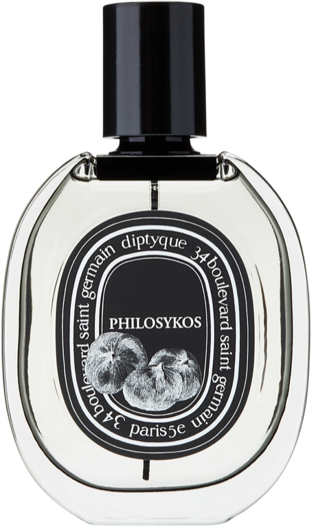
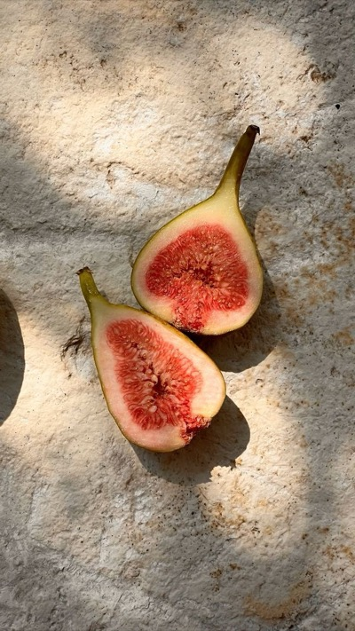
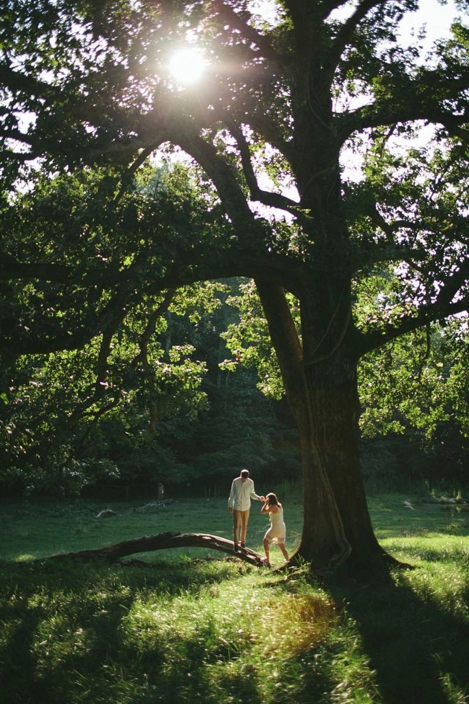
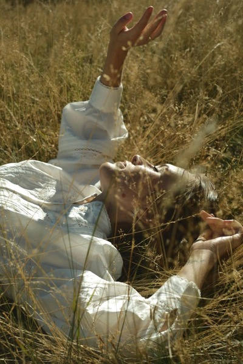
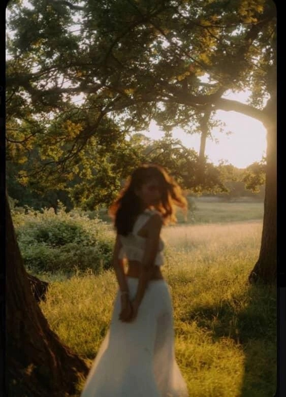
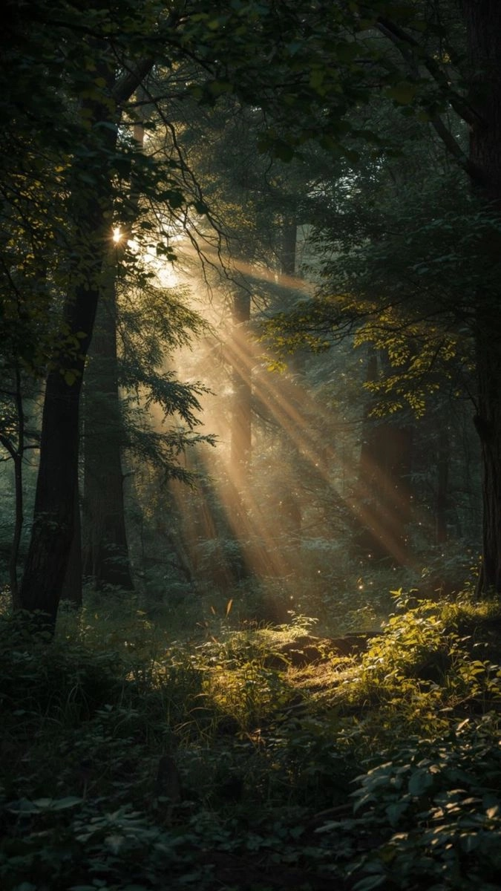
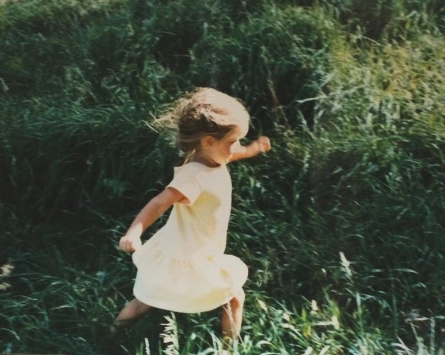
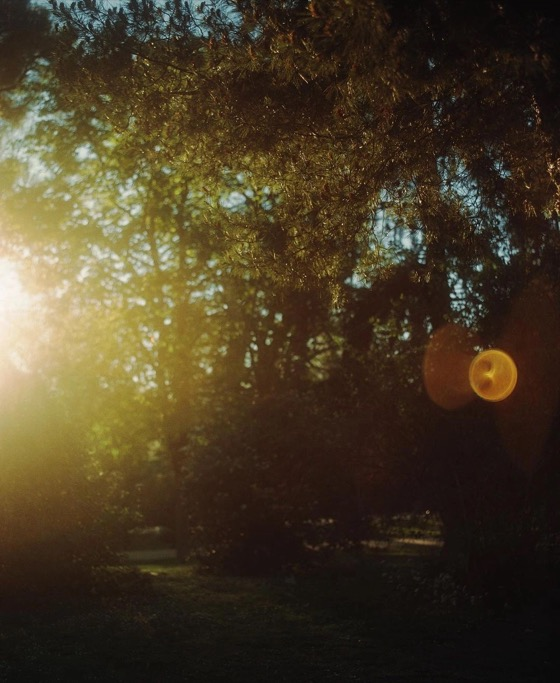
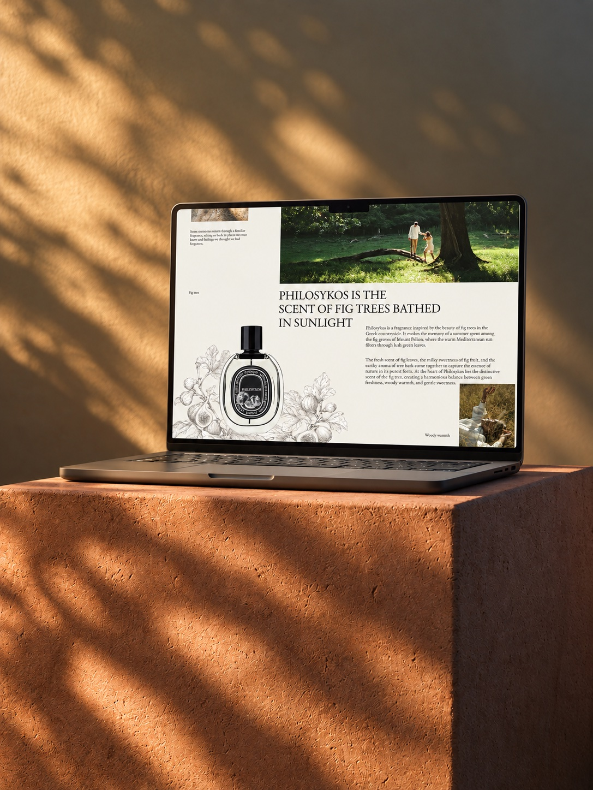
 NEXT PROJECT
NEXT PROJECT